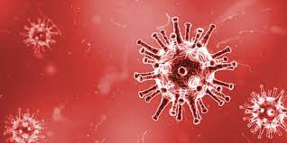

Nous allons vous présenter les différents types de MST. Veuillez sélectionner les titres
pour les surligner afin de savoir sur quels virus portent les descriptions ci-dessous.
Le SIDA
Le VIH infecte et détruit les cellules du système immunitaire.
Il réduit donc la capacité du corps à se protéger contre les infections
ou les maladies comme le cancer.
L’infection se produit par sexe anal, vaginal et oral sans protection ou
avec le partage de seringues ou d’aiguilles infectées.
La contagion peut également se transmettre de la mère à l’enfant à la naissance
ou lors de l’allaitement du bébé, si la mère est infectée. En outre,
il existe un risque de transfusion sanguine. Il n’y a pas de remède contre le VIH.
Il implique donc une forte probabilité à développer le syndrome d’immunodéficience acquise (SIDA).

Le PAPILLONAVIRUS
Les Papilloma Virus Humains ou PVH sont des virus très communs. Il en existe plus de 150 types :
HPV1, 14, 16, 18, etc. Les papillomavirus peuvent infecter la peau et les muqueuses1 et
être responsables de lésions bénignes ou malignes.
L'infection humaine par les PVH est responsable le plus souvent de lésions bénignes comme :
Sur le plan cutané
Les verrues vulgaires et plantaires.
Sur le plan muqueux
Les condylomes, également appelées verrues génitales.
Cependant les PVH peuvent être associés à la survenue de certains cancers :
Sur le plan cutané
La survenue d’un cancer de la peau lié à l’épidermodysplasie verruciforme, une maladie rare
et génétique, due au PVH 5 et 8.
Sur le plan muqueux
La survenue de carcinomes anogénitaux, et notamment d’un cancer du col de l’utérus
en cas de contamination par le PVH 16 ou 18.
La contamination par les PVH est le plus souvent sans symptômes et leur incubation peut
varier de plusieurs semaines à plusieurs années.
Lorsque les PVH s'expriment, ils peuvent donner :
Sur le plan cutané
La verrue vulgaire
Fréquente sur les coudes, les genoux, les mains ou les orteils, elle ressemble à un
dôme dur et rugueux de couleur chair ou blanchâtre.
Les papillomes verruqueux
Il s’agit d'excroissances filiformes sortant de la peau et fréquentes sur la barbe.
Sur le plan muqueux
Les condylomes forment habituellement de petites excroissances de quelques millimètres
rappelant la texture des verrues cutanées. Parfois, les condylomes ne forment que de
petites élevures roses ou brunâtres plus difficiles à voir.
Chez la femme, les symptômes peuvent seulement être des saignements génitaux ou des démangeaisons.
Autres MST
Syphilis
C’est une MST bactérienne hautement létale.
Normalement, elle se transmet par sexe vaginal, oral et anal.
Elle se répand également par le partage des jouets sexuels, la transfusion sanguine,
la mère à l’enfant lors de la naissance. Par le contact avec la peau
d’une personne ayant des plaies provoquées par la syphilis, également.
blennorragie gonococcique
Il s'agit d'une infection due à une bactérie
gonocoque ou Neisseria gonorrhoeae. Ces microorganismes sont qualifiées
de gram négatif sont mises en évidence par la coloration de gram,
très utilisée en bactériologie et permettant une classification des bactéries
et leur identification.
Herpès génital
Cette MST est provoquée par le virus de l’herpès simplex.
L’herpès génital se propage par contact direct de la peau avec la zone infectée
lors des rapports sexuels oraux, vaginaux et anaux.
Les symptômes de cette maladie peuvent apparaître des années après avoir été infecté.
Il n’a aucun remède, mais les symptômes peuvent être traités.
hépatite B
Cette maladie est provoquée par un virus dangereux qui
attaque le foie. Elle est transmise par voie orale, anale et vaginale. Il existe
trois types d’hépatites: A, B et C. Toutes peuvent être transmises par voie sexuelle,
mais l’hépatite B est celle qui se transmet le plus par cette voie.
Elle peut également être transmise par le sang lors du partage d’aiguilles et
d’objets contaminés.
L’hépatite B attaque le foie et peut provoquer une cirrhose, un cancer du foie,
une insuffisance hépatique et éventuellement la mort. Il n’y a pas de remède contre
l’hépatite B, mais l’infection peut être traitée avec des médicaments. Actuellement,
il existe un vaccin qui augmente la protection contre cette maladie.
En conclusion, il est essentiel de réaliser des tests médicaux, surtout lorsque vous
avez eu des relations sexuelles non protégées ou que vous découvrez que l’autre personne
est atteinte d’une MST.
Chlamydia
C’est la maladie bactériologique la plus commune.
Elle est transmise par les rapports sexuels vaginaux, oraux et anaux. Aussi lors du
partage de jouets sexuels ou de la mère à l’enfant pendant la grossesse ou l’accouchement.
Elle n’a généralement aucun symptôme. Elle peut par ailleurs affecter les cellules du
col de l’utérus, de l’urètre, du rectum et parfois des yeux et de la gorge.
Dans certains cas, elle provoque la stérilité.